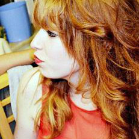

Parade sauvage de Paul Verlaine
18 décembre 2015 par  dans Scène | temps de lecture: 7 minutes
L’automne du musée des Beaux-arts de Mons (BAM) est foulé par « Verlaine, cellule 252. Turbulences poétiques » et « Parade sauvage », deux expositions aux discours forts avec pour fil rouge leur poésie singulière.
Verlaine, cellule 252. Turbulences poétiques
Pour celles et ceux qui les connaissent, Paul Verlaine et Arthur Rimbaud représentent un dipôle célèbre pour leur histoire d’amour passionnée et dévorante. Aujourd’hui, force est de constater que la notoriété de Rimbaud dépasse celle de son amant. Le souhait de Bernard Boussmane, commissaire de l’exposition, a été de mettre en lumière Paul Verlaine, et de briser la vision terne que le public aurait pu avoir de lui.
L’exposition débute par la sulfureuse histoire d’amour du couple et nous montre également l’émulation littéraire ayant eu lieu entre les deux hommes. Puis vient « l’Affaire de Bruxelles », épisode douloureux durant lequel Verlaine tire sur « Rimbe » et le blesse au poignet. Alors que ce dernier ne désire pas porter plainte, Paul Verlaine a la malchance d’être confronté au juge Théodore t’Serstevens. Ce dernier, après avoir lu les lettres échangées entre les deux poètes, décide de mener une lourde et humiliante enquête sur Verlaine qui sera jugé et inculpé pour ses mœurs immorales pour l’époque. Condamné à deux ans de prison, Verlaine est incarcéré à Mons.
Même si sa détention dans l’une des premières prisons cellulaires est douloureuse, cet épisode est néanmoins bénéfique pour la plume du poète au vu des ses magnifiques créations carcérales comme l’illustre sublimement le poème Crimen Amoris. Après son emprisonnement dans « le meilleur des châteaux », l’exposition nous permet de suivre le quotidien de l’écrivain, écumant les cafés devenus ses refuges, sa reconnaissance croissante au sein du monde littéraire, jusqu’à son retour, vingt années plus tard en Belgique, période durant laquelle il donnera une série de conférences.
Outre l’intéressante histoire que nous livre Bernard Bousmanne, la richesse de l’exposition « Verlaine, cellule 252 » réside dans la présence des différentes pièces réunies. Nous sommes subjugués par la beauté des lettres que se sont écrites les deux amants, effarés par les différentes pièces à conviction du procès de Verlaine, et mal à l’aise face aux huit portes qui encerclaient sa cellule. De plus, cette exposition nous offre la contemplation de pièces inédites comme le revolver le plus célèbre de la littérature française, ainsi qu’une photographie du poète, alors âgé d’une vingtaine d’années, totalement méconnue du public.
Au-delà de la dureté de certains épisodes de la vie de Paul Verlaine, l’exposition met en lumière la délicatesse et le talent indéniable que revêtent les œuvres de ce poète parfois oublié.
Parade sauvage
« J’ai seul la clef de cette parade sauvage. » Voici le vers d’Arthur Rimbaud ayant inspiré le commissaire, et futur directeur du musée des Arts contemporains du Grand Hornu, Denis Gielen, pour le titre de son exposition « Parade sauvage ». Cette dernière rend hommage à différents artistes européens et américains dont les œuvres se sont inscrites dans une insurrection anti-conformiste, et s’articulent autour de cinq lignes de fuite, attestant de l’ensauvagement qu’a pu subir l’art durant les sixties.
L’exposition inaugurée par une « maltraitance » de la peinture académique, se poursuit par une fusion de l’Homme et de la nature, par le saccage de l’iconographie d’une société de consommation, par le questionnement sur l’identité sexuelle, pour se clore par des performances empreintes de ritualisme, parfois très sauvage.
Le musée des Beaux-Arts de Mons, avec ce parcours initiatique, nous offre une belle collection et permet d’entrevoir la contre-culture de l’époque. L’utilisation de nouveaux médiums est tout à fait saisissante et est remarquablement bien illustrée par Gaston Chaissac et son personnage naïf peint sur une écorce d’arbre, ou par la transformation émouvante d’affiches lacérées en œuvres d’art par Mimmo Rotella.
nan © Nan GoldinL’inversion des genres est magnifiquement capturée sur la pellicule de Nan Goldin, nous donnant presque l’envie d’enfiler pour une nuit les talons hauts du travesti Crystal. Les performances des actionnistes viennois nous glacent le sang par la cruauté et la sauvagerie qui en émanent. Enfin, l’œuvre vidéographique de Dennis Oppenheim, faisant tournoyer sa fille Chandra dans les airs, nous émeut, et se trouve sacralisée par la blancheur parfaite des murs du musée. « Parade sauvage » nous offre une multitude d’œuvres empreintes d’un discours fort, ainsi que d’une émotion glaçante. Néanmoins, il serait intéressant de s’interroger quelques instants sur la scénographie adoptée par le musée montois, qui met en lumière un problème coutumier des expositions d’art contemporain.
Le white cube, paysage scénographique associé à l’art contemporain, est devenu ces dernières décennies la norme au sein des différents lieux d’exposition. Celui-ci se présente sous la forme de murs blancs immaculés sur lesquels s’inscrivent le moins possible de textes. « Parade sauvage » ne déroge pas à cette règle et s’intègre, comme l’on peut s’y attendre, dans un système expositionnel récurrent. Même si l’exposition présente une très belle collection, celle-ci s’exprime avec peu d’originalité.
© Jean-François Berhin © Jean-François BerhinEnsuite, cette scénographie, ou plutôt son absence, engendre un problème de taille. Le cube blanc accompagne une idéologie reposant sur un lien qui tente de s’établir entre l’œuvre d’art et le spectateur lorsque celui-ci la contemple. De ce fait, il ne faudrait surtout pas parasiter cette union par une décoration bactérienne ou des mots inutiles. Notons qu’un musée ne se sert pas nécessairement du white cube pour exprimer cette idéologie, mais cette dernière l’utilise fréquemment comme vecteur. Ensuite, certains penseront qu’une œuvre d’art parle d’elle-même et ne doit pas forcément être utilisée comme la pièce à conviction d’un discours ou d’une problématique expositionnelle, ce que l’on peut comprendre et envisager. Le problème de cette idéologie est que le public visé est composé de personnes érudites. Le visiteur doit nécessairement amener son bagage intellectuel lorsqu’il se rend dans ce type d’exposition pour en comprendre le sens. L’art contemporain est par essence un art difficile d’accès, celui-ci étant intimement lié aux doctrines et philosophies de ses créateurs. Il suscite aujourd’hui un attrait chez une population très mince, quand le reste de celle-ci le perçoit comme un art prétentieux et élitiste. Le public a besoin de disposer de clefs afin d’être touché par cet art et il est, dans une certaine mesure, de la mission du musée de les apporter aux visiteurs. De plus, il serait légitime d’attendre d’une telle institution qu’elle vise à instruire tout type de visiteur et non seulement à contenter une poignée d’initiés. Malheureusement aujourd’hui, optant pour une non-intervention visuelle dans un souci de respect de l’œuvre d’art, rares sont les institutions s’affranchissant du white cube. Il semblerait néanmoins que la norme commence doucement à s’essouffler dans les consciences, certains musées apposant des couleurs audacieuses sur leurs cimaises et développant leur médiation.
Dans le cadre de Mons 2015, capitale européenne de la culture, le musée des Beaux-Arts de Mons nous propose deux expositions en miroir. Qu’il s’agisse du XIXe ou du XXe siècle, que l’on parle d’un poète sulfureux ou de plasticiens contestataires, ce qui rassemble ces deux expositions est l’anticonformisme mêlé à la beauté. Et même si l’on pourrait trouver à y redire, les différentes salles de « Verlaine, cellule 252 » et de « Parade sauvage » méritent, sans aucun doute, d’être parcourues.
Les deux expositions seront ouvertes au public jusqu’au 24 janvier 2016.
Vos réactionsCommentaires
À votre tour de nous dire ce que vous en pensez, en toute subjectivité...

{kind=link}